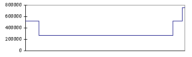

Proprietary to General Electric
Direction 5114043-800, Rev# 9
LightSpeed 3.X Service Methods (Advanced)
Proprietary to General Electric |
The Interconnect/X-Ray verification tests fail when 1 or more channels fail the expected count values for the indicated test.
The X-Ray verification test takes 4 scans using protocols at specified techniques (the results are analyzed per Engineering Specifications). The Interconnect test performs additional scans that logically sequence through each switchable combination.
Before executing the interconnect/x-ray verification scans, verify that there is nothing within the x-ray beam. Any beam obstruction will attenuate the x-ray and will cause the test to fail.
The scans and techniques are found in Table 1.
Table 1: X-Ray Verification Scans 8 Slice Only
| Slice Thickness | Z Chnls | DAS Gain | X-Ray | Filter | Focal Spot | Scan Time | Gantry Rotation |
|---|---|---|---|---|---|---|---|
| 4 x 5.00 | 4 x 1.25 | 31 | 120KV/40mA | Air | Small | 1 Sec. 984 views | Stationary, 0° |
| 4 x 3.75 | 4 x 1.25 | 29 | 120KV/40mA | Air | Small | 1 Sec. 984 views | Stationary, 0° |
| 8 x 2.50 | 8 x 1.25 | 9 | 120KV/40mA | Air | Small | 1 Sec. 984 views | Stationary, 0° |
| 8 x 1.25 | 8 x 1.25 | 5 | 120KV/40mA | Air | Small | 1 Sec. 984 views | Stationary, 0° |
| CAL1 | CAL1 | 5 | 120KV/40mA | Air | Small | 1 Sec. 984 views | Stationary, 0° |
| CAL2 | CAL2 | 5 | 120KV/40mA | Air | Small | 1 Sec. 984 views | Stationary, 0° |
| CAL3 | CAL3 | 5 | 120KV/40mA | Air | Small | 1 Sec. 984 views | Stationary, 0° |
| CAL4 | CAL4 | 5 | 120KV/40mA | Air | Small | 1 Sec. 984 views | Stationary, 0° |
| CAL5 | CAL5 | 5 | 120KV/40mA | Air | Small | 1 Sec. 984 views | Stationary, 0° |
| CAL6 | CAL6 | 5 | 120KV/40mA | Air | Small | 1 Sec. 984 views | Stationary, 0° |
| CAL7 | CAL7 | 5 | 120KV/40mA | Air | Small | Stationary, 0° |
If a channel or channels fall outside the expected values, a error message will be indicated in the error log with Exam/Series/Scan numbers, as well as Expected vs. Actual count values.
The channel(s) will also be reported with board number, Housing and elastomer number associated with the failing channel(s).
Elastomer
DAS Converter Board
DAS Control Board (DCB)
DAS Backplane (chassis)
Detector
Verify nothing is within x-ray beam and perform the x-ray verification test within DASTools.
Analyze test results and determine if failures are multiple channels or single channel.
Prerequisites for test to pass are
Tube calibration (KV and mA) is correct.
Alignments (POR and BOW) are correct
Determine if the failure root cause:
Converter board
Elastomer
Detector Flex
DAS Chassis backplane
FET control signal
Run an iteration of X-Ray Verification
Under Major function [TROUBLESHOOT] ,-> [DATA AQUISITION] , select [DASTOOLS]
Select [INTERCONNECT/X-RAY VERIF TEST] .
Verify nothing is within x-ray beam path and then press “ [ACCEPT] ” to execute tests.
Analyze the results
Pass: All channels pass.
Fail: Open the log and evaluate the failures. Determine if failure is related to:
Single channel, single row
Multiple channels
Refer to Example plots for various types of failures. Look for patterns relative to scan Acquisition mode.
Single Channel Failure (This could include one single channel or several unrelated single channels)
Swap converter boards.
When you swap a suspected converter card with another one, make sure you swap with a card at least four slots away, but in the same chassis.
Pass: If problem is fixed, then it was a seating problem. Verify System Operation and you’re done.
Fail: Problem follows board, replace board. Verify System Operation and you’re done.
Fail: Same channel failure, proceed to next step
Replace elastomer.
Pass: YOU ARE DONE
Fail: Proceed to next step
Reseat DCB.
Pass: YOU ARE DONE
Fail: Proceed to next step
Flash DCB.
Pass: YOU ARE DONE
Fail: Proceed to next step
Run DC_CAL: DC_Cal inputs a known DC voltage to the front-end pre-amplifiers of the Converter board. The signal then follows the same flow and processing that of any scan data. It gets amplified and converted to a digital signal that is passed along to the Scan Data Disk. Since the input voltage is known, it is compared to a known specification and either passes or fails.
Pass: The signal path from the board pre-amp to disk is good. There appears to be a fault between the Detector and Converter board.
Open Elastomer / top cover associated with failing channel.
Remove elastomer and clean flex and backplane pads with alcohol wipes and Air. Visually inspect for debris or defects. Install new elastomer and re-assemble. Rerun x-ray verification.
Pass: YOU ARE DONE
Fail: Proceed to next step
Remove the suspected converter cards and place them in static-free bags. Using a static-free nozzle on the Aero Duster can, clean the connector pins. Replace the converter cards. Make sure the cards are placed in the same slots where they came from. Rerun the x-ray verification test.
Pass: YOU ARE DONE
Fail: Proceed to next step
Repeat steps a, b and c.
Pass: YOU ARE DONE
Fail: Proceed to next step
Backplane continuity check. Refer to MDAS Backplane Continuity Checkout Procedure.
Pass: YOU ARE DONE
Fail: Proceed to next step
Isolate between the DAS Backplane and Detector.
Using ESD precautions, disconnect Detector flex, and place “Bootie” on Flex lead.
Remove elastomer associated with failing channel.
Rerun “Offsets and Noise Test” from DAS Tools.
Pass: The short is either on the detector flex or within the detector. Reconnect the detector flex and repeat several times to confirm the detector is causing the problem. During each iteration, visually inspect for any defects. Use new elastomer and clean interface between each iteration. If problem only occurs when the detector is connected, replace the detector.
Fail: The Detector is not at fault. Remove the rest of the flexes on the failing channels housing (Inner and Outer).
Remove the housing by removing the 2 small screws holding the housing to the backplane. Use a 2.0mm hex wrench/driver.
Inspect the bottom of the housing and backplane for any debris or defects. Replace housing if necessary. Clean the bottom side of the housing as well as the backplane with alcohol wipes and air.
Measure continuity between DAS backplane flex pad and converter board connector (Refer to Backplane continuity check procedure).
Reassemble housing to backplane. There is no torque spec on these screws. Replace any elastomers as needed. Rerun test.
Pass: YOU ARE DONE
Fail: END LEVEL 1 on-site troubleshooting. Collect all data. Escalate problem.
Example Plot using Scan Analysis:
Illustration 1: Normal 8 x 2.50mm
